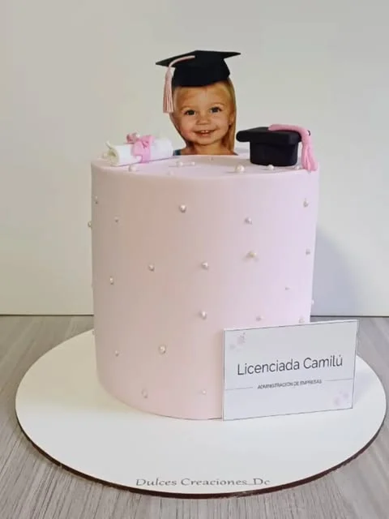

Casamientos, bodas y egresados · Temperley
Casamientos, bodas y egresados · Temperley
Tortas de casamiento,
bodas y egresados
Diseños elegantes · Momentos inolvidables · Zona Sur
Pedir presupuesto por WhatsAppTortas para casamiento
Tortas elegantes de uno, dos o tres pisos con decoración en buttercream, ganache o fondant. Diseños clásicos o modernos según tu estilo. Coordinamos con la decoración del salón para que todo sea armonioso.
Tortas para egresados
Celebrá el logro con una torta temática. Diseños con toga, birrete, colores de la institución o el estilo que el egresado prefiera. Personalización total.
Tortas de compromiso
Para pedidas de mano y celebraciones íntimas. Diseños románticos con corazones, anillos o la temática que elijan juntos.
Estilos elegantes
hechos en nuestro taller
Tortas reales de Dulces Creaciones. Tomamos estas terminaciones como punto de partida y diseñamos la torta de tu casamiento, compromiso o egreso a medida.



Contanos cómo imaginás tu torta
Pasanos la fecha, la cantidad de invitados y alguna referencia de estilo. Te pasamos el presupuesto sin cargo en el día. Para eventos grandes recomendamos pedir con 15 días de anticipación; la fecha se reserva con una seña del 50% y el retiro es en nuestro taller de Temperley.
Consultá tu torta por WhatsAppPreguntas sobre tortas de casamiento
¿Con cuánta anticipación pido la torta de casamiento?
Para casamientos y eventos grandes recomendamos pedirla con 15 días de anticipación. La fecha se reserva con una seña del 50%.
¿Hacen tortas de casamiento de varios pisos?
Sí, hacemos tortas de uno, dos o tres pisos con decoración en buttercream, ganache o fondant, en estilo clásico o moderno según tu estilo.
¿Dónde retiro la torta?
Todas las tortas se retiran en nuestro taller de Temperley, Zona Sur. Coordinamos día y horario por WhatsApp (lunes a sábado de 9 a 17 h).